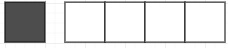
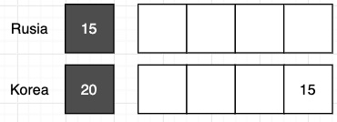
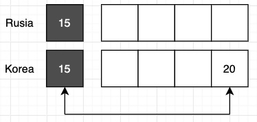
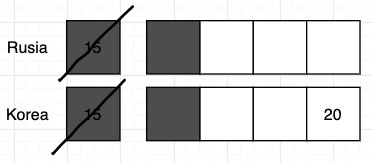

특징
• 재귀처럼 문제를 여러 조각으로 쪼개는 것은 같으나 모든 선택지를 고려하여 답을 내는 재귀와 달리
각 단계마다 가장 좋은 방법만을 선택
(사실상 모든 걸 고려하는 RCS이나 DP로 무조건 풀 수 있음. 시간이 걸려서 그렇지)
• 지금의 선택이 앞으로 남은 선택들에게 어떤 영향을 주는지 고려하지 않음
• 최적해를 항상 찾을 순 없으므로 다음의 경우에만 쓸 것
- 탐욕법을 사용해도 최적해를 구할 수 있음을 증명할 수 있는 경우
- 시간/공간의 제약으로 다른 방법으로 최적해를 찾는 것보다, 근사해를 찾는 것으로 타협할 수 있는 경우
• 정당성 증명
(1) 첫번째 Subproblem 에 대한 Strategy
첫번째 subproblem 에서 어떤 전략을 취할 것인가? (예: 가장 시간이 짧은 회의? 가장 먼저 끝나는 회의?)
(2) Greedy Selection Property
① 전략을 따르지 않는 Optimal Solution 이 존재함을 가정한다
② ① 을 조금 수정하여, (1) 의 전략을 따르도록 변경해도 Optimal Solution 이 유지됨을 보인다
→ Optimal Solution 중 해당 전략을 따르는 경우가 최소 한 가지는 있음
(3) Optimal Substructure (이건 보통 자명하게 알 수 있음)
각 subproblem 들을 전략대로 풀면, 전체 problem 에 대한 최적해를 구할 수 있다
• 예시
러시아 선수의 출전선수와 rating 이 주어질 때, 한국 선수가 이기는 최대 횟수는?
(1) 첫번째 Subproblem 에 대한 Strategy 
"가장 첫번째 러시아 선수를 이길 수 있는 rating 이 가장 낮은 한국 선수를 출전시킨다."
(이길 수 없다면 가장 낮은 선수를 출전시킨다)
(2) Greedy Selection Property
① 전략을 따르지 않는 Optimal Solution 이 존재함을 가정한다

“이길 수 있는 최소값이 뒤에 있는 Optimal Solution이 존재한다 치자”
② ① 을 조금 수정하여, (1) 의 전략을 따르도록 변경해도 Optimal Solution 이 유지됨을 보인다

→ 해당 전략을 따르는 Optimal Solution 이 반드시 한개는 있음이 증명됨
(3) Optimal Substructure

r[0]에 최적 선수를 배치하고, r[1]에 최적 선수를 배치하고 … 를 반복하면
r전체에 대한 최적 선수를 배치할 수 있게 된다
(이건가..)